静态图片detection
All I know about video det&track.
These two topics are NOT identical.
Feature extraction based 🆚 Metrics learning based
LSTM
mostly used in video understanding, eg: video abnormal detection, event recognization, find content…
Extract global action & scene information
Detect+Track
How to leverage temporal information?
Tracking: 提模版特征，特征图匹配，找
Detection in video:
frame by frame
使用temporal information作为类别判断的依据
使用LSTM传递时间信息（any context information?）
使用temporal预测可能出现的位置，不确定性
Fuse 检测位置+预测位置 with uncertainty
Multi hypothesis tracking
Detect to Track and Track to Detect Papers:
Detect to Track and Track to Detect https://github.com/feichtenhofer/Detect-Track
Integrated Object Detection and Tracking with Tracklet-Conditioned Detection
video object segmentation hot topic. datasets: youtube-VOS, DAVIS
Re-ID in video
Attribute-Driven Feature Disentangling and Temporal Aggregation for Video Person Re-Identification attribute-driven feature disentangling & frame re-weighting
VRSTC: Occlusion-Free Video Person Re-Identification use temporal information to recover occluded frame
fusion spatial and temporal feature, using weighted sum, optical flow
Accel: A Corrective Fusion Network for Efficient Semantic Segmentation on Video
unsupervised manner add other training signal
weakly-supervised manner use motion and video clue to generate more precise proposals.
You Reap What You Sow: Using Videos to Generate High Precision Object Proposals for Weakly-Supervised Object Detection
graph convolution network perform temporal reasoning
downsampling is sometimes beneficial in terms of accuracy. By means of 1) reducing unnecessary details 2) resize the too-large objects and increase confidence Adascale: Towards Real-time video object detection using adaptive scaling
utilize temporal information 1. wrap temporal info with feature to generate future feature 2. for partial occlusion, motion blur in video
iteratively refine
STEP: Spatio-Temporal Progressive Learning for Video Action Detection
refine the proposal to action, step by step. Spatial-temporal: spatial displacement + action tube(temporal info)
Integrated Object Detection and Tracking with Tracklet-Conditioned Detection
Tracklet-Conditioned Detection+DCNv2+FGFA
mAP=83.5
Integrate tracking in detection not post processing
Compute embeddings of tracking trajectory with detection box, embeddings-weighted sum trajectory category confidence with detect category confidence.
Weight = f(embeddings)
Update trajectory confidence with new + old
Class confidence = trajectory confidence + det confidence
Output = weighted-sum(weights*Class confidence)
Category(only) is determined jointly weighted by last trajectory category and detect box category
code released Flow-Guided Feature Aggregation for Video Object Detection
mAP=80.1, 2017
code released
👇 How to get box with previous information
做video detection 避开tracking：物体不动，分类，3D框，使用LSTM特征传播（一帧效果差，多帧序列变好）
静态图片detection
Why temporal information is not leveraged in tracking?
难点：帧间信息，temporal信息的高效传递
传递清晰信息，防止motion blur
tubelet
-- Large scale surveillance video: GigaVision
— Autonomous driving: Workshop on autonomous driving 3D bounding box Baidu Apollos
— Aerial image (remote sensor): Detecting Objects in Aerial Images (DOAI)
难点：1. Scale variance 2. Small object densely distributed 3. Arbitrary orientation
— UAVision: https://sites.google.com/site/uavision2019/home UAV 1920x1080, 15m, 2min, no classification
— MOT: BMTT MOTChallenge 2019
— ReId, Multi-target multi-camera tracking: Target Re-identification and Multi-Target Multi-Camera Tracking
— Autonomous driving: https://sites.google.com/view/wad2019/challenge
D2-city: 10k video, 1k for tracking, HD
BDD100k: 100k video, nano on keyframe, 40s, 720p 30fps You Can Now Download the World’s Largest Self-Driving Dataset
nuScenes: 1.4M frames, 3D box annotation
Other autonomous driving datasets: Oxford Robotcar, TorontoCity, KITTI, Apollo Scape (1M), Waymo Open Dataset (16.7h, 600k frame, 22m 2D-bbox) https://scale.com/open-datasets
Temporal information for Classifying Multi-Fiber Networks for Video Recognization (ECCV18)
All Fully Motion-Aware Network for Video Object Detection
Video Object Detection with an Aligned Spatial-Temporal Memory
Hard example mining Unsupervised Hard Example Mining from Videos for Improved Object Detection
Sampling? Object Detection in Video with Spatiotemporal Sampling Networks
3D Tracking & Trajectory 3D Vehicle Trajectory Reconstruction in Monocular Video Data Using Environment Structure Constraints
RCNN -> Fast RCNN: 使用RoI pooling代替resize，只计算一次特征图(RoI projection)，多任务训练(bbox regre.和classif.一起训练)
Fast RCNN -> Faster RCNN: 使用RPN代替selective search

一阶段相比二阶段少了RoI pooling过程，拿到框直接在整张图的特征图上分类回归，而不在框中进行。导致可能特征偏移问题
使用类似FGFA的方法，但是增加deformable卷积，简化求其他帧feature和权重的步骤
去掉训练中需要的光流数据，提升（训练）速度
Deformable Convolution: 通过数据计算出的偏移量，是卷积的receptive field可变。不只是基于中心的{(-1,-1),(-1,0),(-1,1),...,(1,0),(1,1)}，即，而可以是
。其中
为小数，使用双线性插值计算。
Spatiotemporal Sampling Network
选择前后K帧的特征图进行融合，当前帧reference frame，其他帧supporting frame。
And so on...
但最后一次，使用最初的
计算第t+k帧权重：
三层子网络S对g计算中间表示，求余弦距离的exp来计算权值。对前后的每一张support frame的每一个像素p计算融合权重
归一化后融合，在t-K到t+K的时间范围上加权求和，获得每个像素点在reference frame（t时刻）的融合特征，输入检测网络。
细节
backbone采用增加4个变形卷积的ResNet-101网络。
获得融合特征后，拆成两部分，一半输入RPN产生proposal（每点9个anchor和一共300个proposal），另一半输入R-FCN。
训练时K较小，K=1，前后各一帧，随机sample的。
先在DET上预训练，support frame就是本身。
测试时使用较大K，K=13。先算出特征图然后缓存来解决GPU RAM问题。
Using memory(LSTM) in object detection
SOTA of ImageNet VID
Concern more on light-weight and low computation time.
使用轻量级网络mobilenet识别场景的主要内容，快速的特征提取需要维护memory作为补充信息
一个精确的特征提取器用于初始化和维护memory，之后快速处理，使用LSTM维护memory。强化学习用来决定使用快速/慢速特征提取器(tradeoff)
Use two feature extractor parallel (accuracy🆚speed)
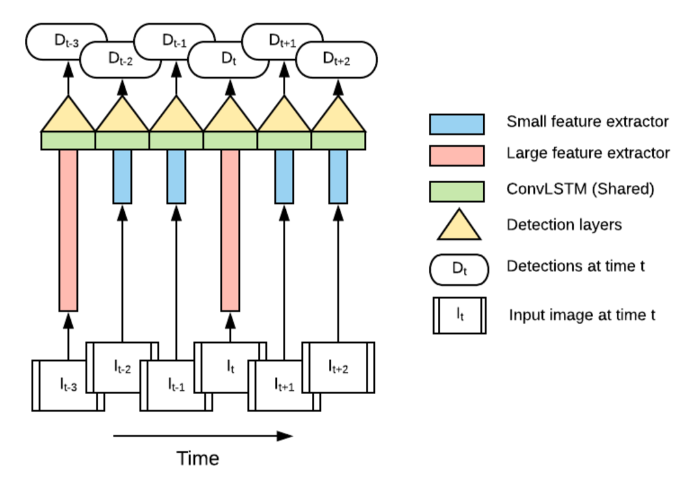
inference流程
为选择的特征提取网络，m为memory module.
，d为SSD检测网络
定义为
超参数，也可以通过interleaving policy获得
other methods：减少深度0.35，降低分辨率160x160，SSDLite，限制anchor的长宽比
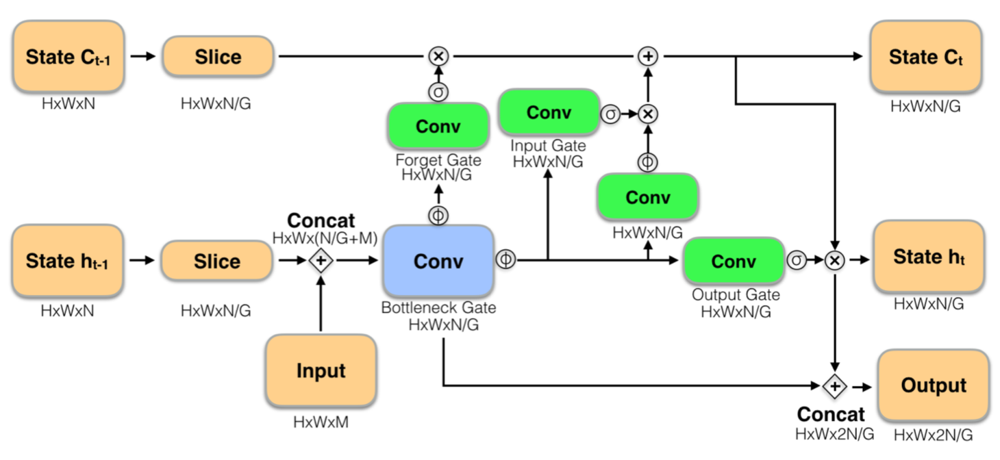
Modified LSTM module👆:
Ps. standard LSTM👇
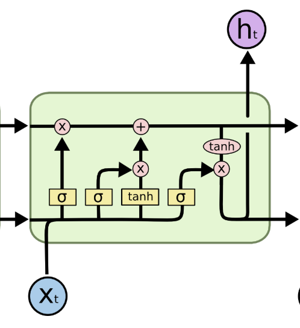
To perserve long-term dependencies skip state update: when
run, always reuse output state from the last time
was run
Pretrain LSTM on Imagenet Cls for initialization
Unroll LSTM to six steps
Random select feature extractor
Crop and shift to augment training data
Policy network to measure detection confidence, examines LSTM state and decide next feature extractor to run
Train policy network using Double Q-learning(DDQN)
Action space: at next step
State space: , LSTM states and their changes, action history term
(binary vector, len=20).
Reward space: speed reward positive reward when is run, accuracy reward loss difference between min-loss extractor.
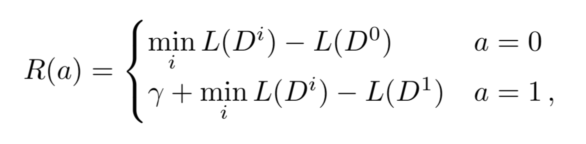
Policy network to devide which extractor👇
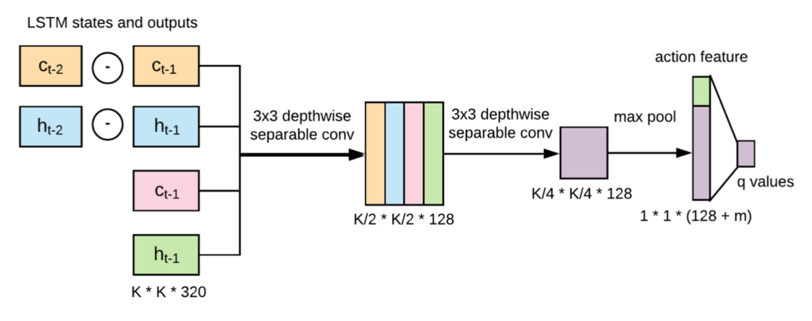
Generate batches of by run interleaved network in inference mode
Training process👇
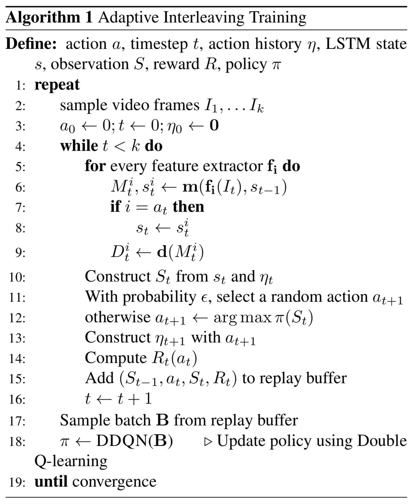
and
run in separate threads,
keeps detection and
updates memory when finished its computation. Memory module use most recent available memory, NO WAIT for slow extractor.
Potential Weakness: latency/mismatch of call large extractor and accuracy memory output. Delay of generate more powerful memory using large extractor when encounter hard example. Memory will remains less powerful before large extractor generates new one.
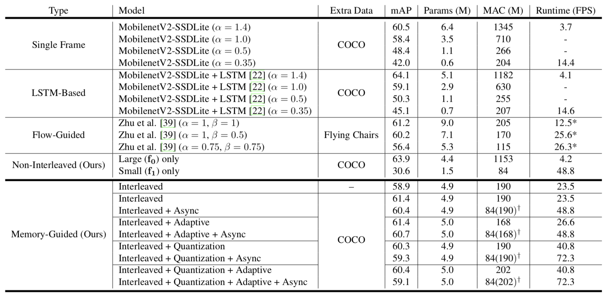
ImageNet VID val👆
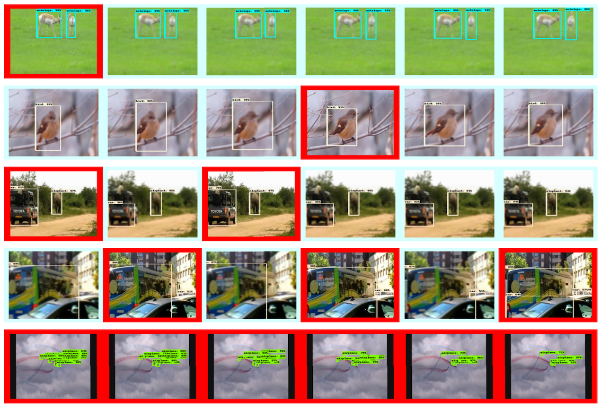
👆RL demonstration: red means call large model, blue for small model.
如何高效的产生时间维度的proposal (aka. ::tubelet::)?
通过关键帧检测结果产生一条序列的所有proposal ::detect by track::。然后使用LSTM分类
产生tubelet有两种方法 1. Motion-based (only for short-term) 2. Appearance-based (tracking, expensive/?)
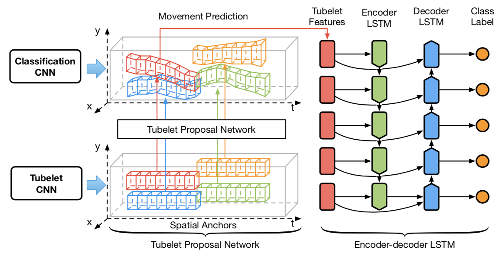
↖️首先对静态图片进行检测获得检测结果，然后在 相同位置 不同时间上pooling，获得spatial anchors。基于假设感受野足够大可以获得运动物体的特征（中心不会移出物体框）。Align之后用于预测物体的移动
使用Tubelet Proposal Network回归网络预测相对于 第一帧 的运动量（为了防止追踪过程中的drift，累计误差）。预测的时间序列长度为omega
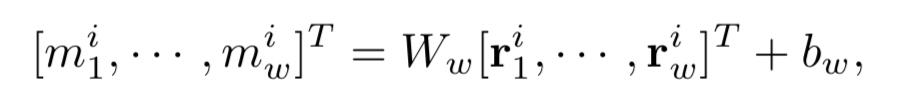
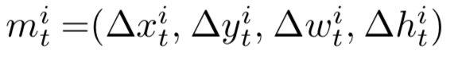
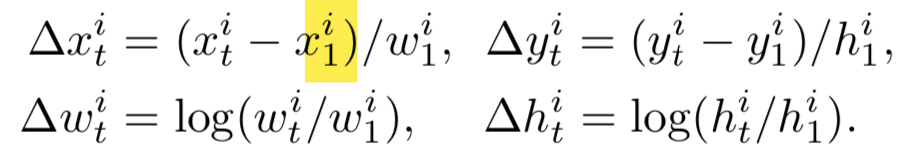
同时，认为GT的bbox就是tubelet proposal的监督信号。同时对运动表示进行归一化。（对归一化后的残量进行学习）
损失函数👇
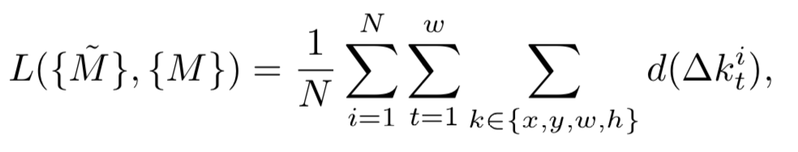
👆M为GT，M_hat为归一化后的offset
创新点：::分块初始化::
首先训练预测时间序列长度为2的TPN，得到参数W_2和b_2。由于第二帧运动量m_2由第1和第2帧的特征图预测，第三帧运动量由第1和第3帧特征图预测，m_4由第1&4帧预测。和中间帧无关，所以认为预测过程有相似性（1&2 -> m2, 1&3 -> m3)，可以使用W_2和b_2部分初始化W_3和b_3参数中的一块👇
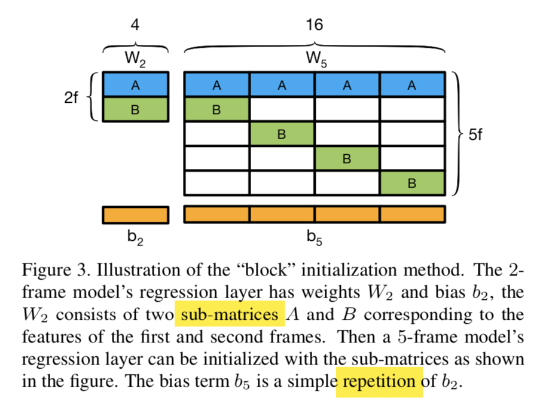
最后循环产生所有帧的所有static anchor的tubelet proposal👇
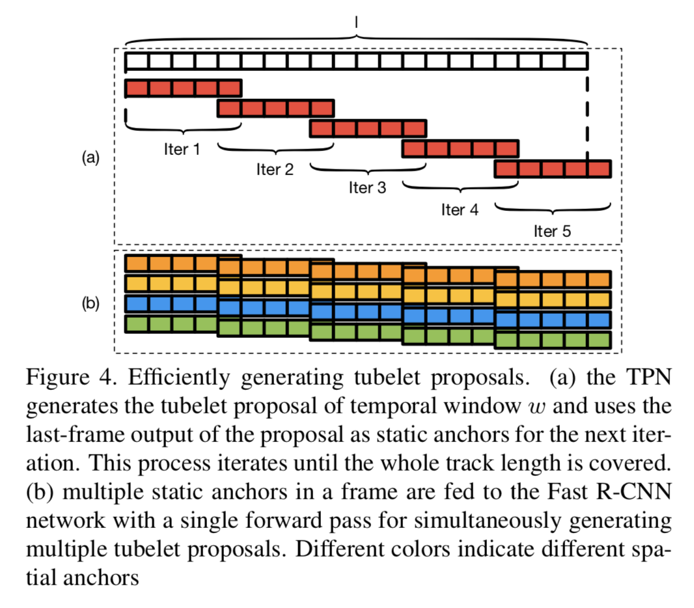
LSTM做类别预测↘️
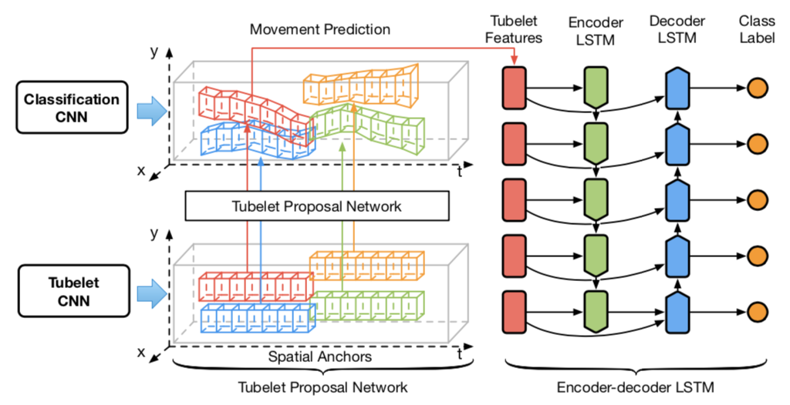
↗️RoI-pooling之后的tubelet proposal中特征放入一层的LSTM encoder，再将memory和hidden放入decoder反序输出类别预测
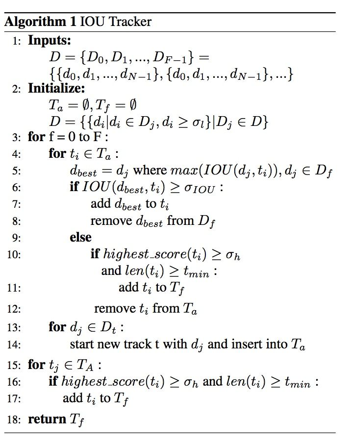D表示检测结果，F帧，每一帧至多N个检测结果T_a表示正在追踪未结束的目标，T_f表示已经最终完成的trajectory（移出画面外）
思路：
对于 某一帧 ，对于每个正在追踪的 trajectory ，在当前帧的检测结果中找IoU最大的检测结果。如果IoU大于阈值，添加到检测结果中；如果最大的IoU都没有大于阈值，则判断trajectory的长度和最高置信度，判断是否从T_a删除并加入检测完成trajectory集合中T_f。认为消失/追踪完成
继续下一个trajectory。剩余的检测框，建立一个新的trajectory。
最后T_a中trajectory判断长度和最高置信度，决定是否加入T_fT_f即为追踪结果
每一帧的观测产生一个跟踪树，将出现在geting area的观测添加作为其子节点
增加一个分支标记跟踪丢失的节点
Measure the distance between a vector(point) and a distribution
Why use Mahalonobis distance?

How is Mahalonobis distance different from Euclidean distance?
formula is the observation
is the mean value of the independent variables
is the inverse of covariance matrix
Read more
Why use kalman filter?
Estimate state of a system from different sources that may be subject to noise. Observe external, predict internal
Fuse the observations to estimate

formulas ps. means the derivate of x
,
,
subtract
Multiple the predicted position's p.d.f. and the measured position's, p.d.f., and form a new Gaussian Distribution.See more
means instance i's location in k time, subject to
,
Gaussian distribution.
,
can be estimated via Kalman Filter.
Use Mahalonobis Distance between observed location and predicted location to determine add to trajectory or not.
threshold determine range the gating area.
Detector中加入light-weight tracker，使用detector提取的特征
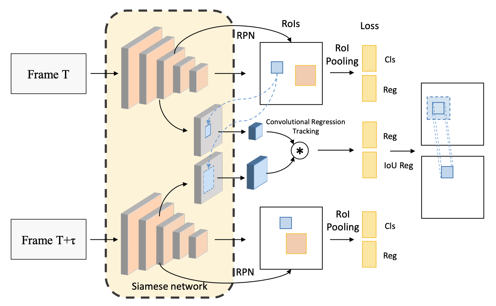